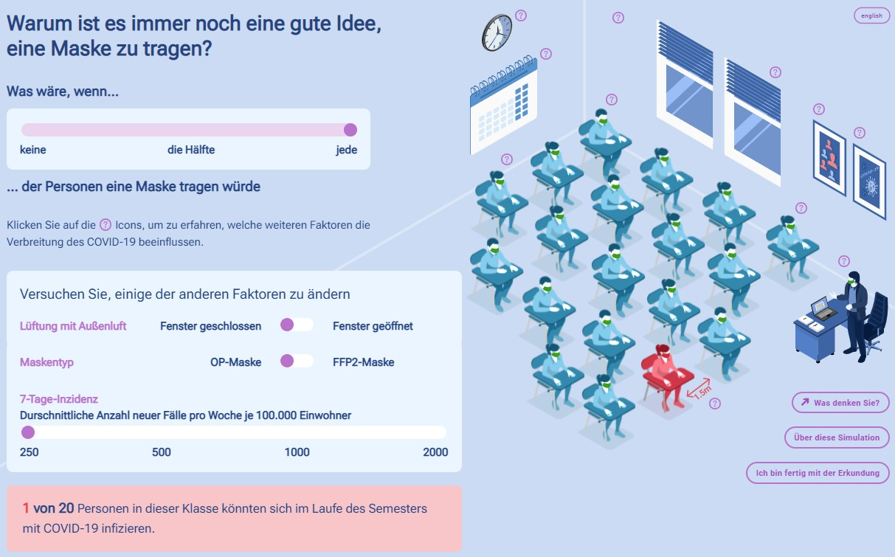
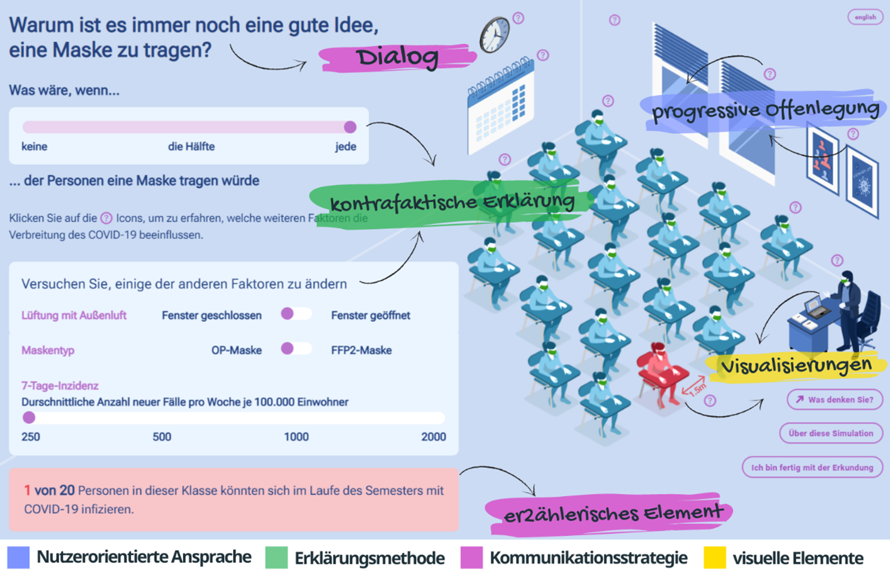
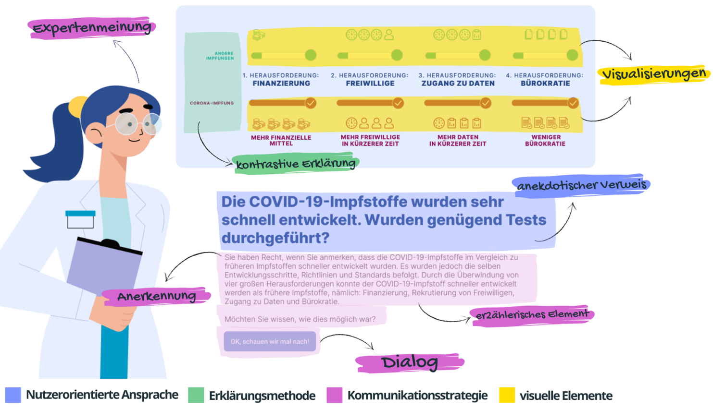

XAI4Covid — Anwendung von KI-Erklärbarkeit auf Krisenkommunikation
Untersuchung, wie Forschungsergebnisse zur Erklärbarkeit von KI-Systemen übertragen und angewandt werden können, um die öffentliche Kommunikation in komplexen Krisensituationen wie der COVID-19-Pandemie zu verbessern.
XAI4Covid untersucht, wie Forschungsergebnisse zur Erklärbarkeit von KI-Systemen übertragen und angewandt werden können, um die öffentliche Kommunikation in komplexen Krisensituationen wie der COVID-19-Pandemie zu verbessern. Das Projekt wurde im Rahmen des Ergänzungsmoduls „Corona-Krise und darüber hinaus — Perspektiven für Wissenschaft und Gesellschaft“ der Volkswagen Stiftung gefördert, das Forschungsprojekte unterstützen soll, deren Ergebnisse nicht nur unmittelbar zur Bewältigung der Krise beitragen, sondern mittel- bis langfristig auch Impulse zur Bewältigung großer gesellschaftlicher Herausforderungen geben können.
Problem & Kontext
Die COVID-19-Pandemie hat grundlegende Herausforderungen bei der Vermittlung komplexen wissenschaftlichen Wissens an die breite Öffentlichkeit offengelegt:
- Kommunikationslücke: Expertenwissen über Infektionsrisiken, Eindämmungsmaßnahmen und Impfungen wurde häufig auf eine Weise kommuniziert, die für die breite Öffentlichkeit schwer verständlich und umsetzbar war.
- Öffentliche Akzeptanz: Das Fehlen verständlicher Erklärungen trug zu einer verringerten öffentlichen Akzeptanz und Umsetzung empfohlener Eindämmungsmaßnahmen bei.
- Ungenutztes KI-Forschungspotenzial: Bestehende Forschung zu KI-Erklärbarkeitstechniken — wie kontrastive und kontrafaktische Erklärungen — war noch nicht zur Verbesserung der öffentlichen Krisenkommunikation eingesetzt worden.
Forschungsansatz
- Kontrastive & Kontrafaktische Erklärungen: Anwendung von KI-Erklärtechniken, um der Öffentlichkeit komplexe Szenarien durch Kontrastierung von Alternativen und „Was-wäre-wenn“-Argumentation zu verstehen zu helfen.
- Benutzer-zentriertes Design: Integration von Erkenntnissen aus Kommunikationswissenschaft, Psychologie und HCI, um wissenschaftliche Informationen verständlicher zu machen und das öffentliche Verständnis zu erhöhen.
Lösung: Interaktiver Infektionsrisiko-Simulator
Das Herzstück ist ein interaktives Web-Tool (what-if-masks.org), das es Personen ohne wissenschaftlichen Hintergrund ermöglicht, Infektionsrisiken in Innenräumen intuitiv zu erkunden.
- Was-Wenn-Erkundung: Nutzer:innen können interaktiv Faktoren wie Masken, Inzidenzwerte und Lüftung anpassen und verstehen, wie Verhalten Infektionsrisiken beeinflusst.
- Wissenschaftlich fundiert & zugänglich: Basierend auf etablierten epidemiologischen Modellen, gestaltet für leichte Benutzung und Verständlichkeit.
Weitere Ergebnisse
- Leitlinien zu Erklärungsmethoden: Praxisleitlinien darüber, wie KI-Erklärungsmethoden die COVID-19-Kommunikation stärken können (Herunterladen), und Expert:innen sowie Entscheidungsträger:innen helfen, ihre öffentliche Kommunikation zu verbessern.
- Instagram-Tutorial: Ein Tutorial, das zeigt, wie interaktive Teaser-Stories für den Simulator auf Instagram erstellt werden können (Herunterladen), um die Reichweite über soziale Medien auf jüngere Zielgruppen auszuweiten.
- Projektposter: Ein umfassendes Poster, das den interdisziplinären Ansatz zur menschenzentrierten COVID-19-Kommunikation beschreibt (englische Version herunterladen) und zeigt, wie Erkenntnisse aus der Forschung zu Erklärbarer KI angewandt wurden.
Evaluation
Der interaktive Simulator wurde wissenschaftlich hinsichtlich Nutzerakzeptanz und Wirksamkeit evaluiert. Die Evaluation bestätigte, dass der Ansatz, KI-Erklärbarkeitstechniken auf die Krisenkommunikation zu übertragen, das öffentliche Verständnis von Infektionsrisikofaktoren signifikant verbesserte und die Auseinandersetzung mit den zugrunde liegenden wissenschaftlichen Informationen erhöhte.


Ergebnisse & Wirkung
Mehrstufige Evaluation zeigte signifikante Wirksamkeit von KI-Erklärbarkeitstechniken für die Krisenkommunikation:
183+
Insgesamt evaluierte Teilnehmende
85%
Fanden Erklärungen verständlich
↑ Vertrauen
Signifikant glaubwürdiger & überzeugender
80%
Stimmten zu, dass Vergleich Verständlichkeit verbessert
Wirkungsbereiche
- Öffentliche Gesundheit: Der breiten Öffentlichkeit wurde ein intuitives Werkzeug zur Verfügung gestellt, um Infektionsrisiken in Innenräumen zu verstehen und während der Pandemie informierte Entscheidungen zu treffen.
- Krisenkommunikation: Es wurde ein neuartiger Ansatz etabliert, um KI-Erklärbarkeitstechniken in praktische Kommunikationsmethoden zu übersetzen, die über COVID-19 hinaus auf zukünftige Krisenszenarien angewandt werden können.
- Forschungstransfer: Es wurde gezeigt, dass Erkenntnisse aus der KI-Forschung eine direkte gesellschaftliche Wirkung entfalten können, wenn sie auf reale Kommunikationsherausforderungen angewandt werden.
Rolle von EIPCM
EIPCM leitete das XAI4COVID-Projekt und entwickelte das Kernkonzept, KI-Erklärbarkeitstechniken — insbesondere kontrastive und kontrafaktische Erklärungen — auf die Krisenkommunikation anzuwenden. EIPCM konzipierte und entwickelte das zentrale Projektergebnis: einen interaktiven Infektionsrisiko-Simulator (what-if-masks.org), der es Nutzern ermöglicht, die Auswirkungen von Schutzmaßnahmen auf die Virusübertragung in Alltagsszenarien zu erkunden.
EIPCM führte zudem die nutzerzentrierte wissenschaftliche Evaluation mit über 183 Teilnehmenden durch und erstellte praxisorientierte Leitlinien zu Erklärungsmethoden für die Gesundheitskommunikation — basierend auf Erkenntnissen aus Kommunikationswissenschaft, Psychologie und Mensch-Computer-Interaktion.
Erkenntnisse
- Erklärbarkeit über KI-Systeme hinaus: Techniken, die für die Erklärung von KI-Entscheidungen entwickelt wurden, können wirksam umfunktioniert werden, um komplexe wissenschaftliche Informationen für die breite Öffentlichkeit zu erklären.
- Interaktive Exploration statt statischer Information: Es hat sich als wesentlich wirksamer erwiesen, Menschen interaktiv „Was-wäre-wenn“-Szenarien erkunden zu lassen, als statische Risikoinformationen zu präsentieren.
- Interdisziplinäre Zusammenarbeit ist unerlässlich: Die Verknüpfung von KI-Forschung, Kommunikationswissenschaft und Public-Health-Expertise war entscheidend für die Entwicklung von Werkzeugen, die sowohl wissenschaftlich fundiert als auch öffentlich zugänglich sind.
Ressourcen & Veröffentlichungen
Konsortium
Partner
- EIPCM (Deutschland) — Projektleitung
- Radboud University (Niederlande) — Forschungspartner
- Hochschule Stralsund (Deutschland)